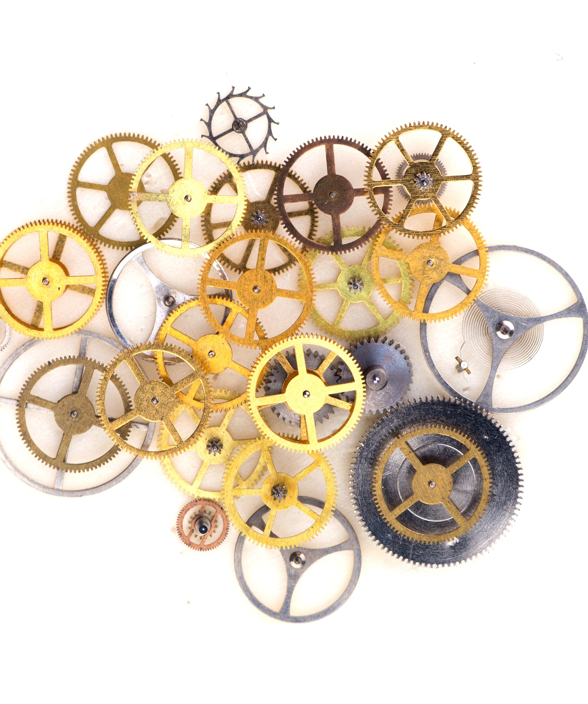

מי המציא את הגלגל?
מאת: רוני אהרוני
האם אנו חייבים את המצאת הגלגל לאדם קדמון כלשהו, שהתבונן בחיפושיות זבל אשר יוצרות כבר מיליוני שנים כדור זבל ענקי ומגלגלות אותו אל הקן? האם ייתכן שהוא הבין שאם יצליח לשחזר את המעשה, יוכלו הוא וחבריו להעביר משאות כבדים ממקום למקום?
הגלגל הוא המכונה המוקדמת ביותר מתוך 6 המכונות הפשוטות של העת העתיקה (דוגמאות למכונות פשוטות נוספות הן: מנוף, גלגלת ובורג). את הגלגל המציאו בסוף תקופת האבן כנראה כדי לסייע לקַדָרִים ליצור כלים מחֵמָר, בִּמקום לסובב אותם ביד. בגלגלי אָבְנַיִים כאלה השתמשו במֵסוֹפּוֹטַמְיָה (אזור עיראק של ימינו) כבר בשנת 4000 לפני הספירה, כלומר לפני כ-6000 שנה. בשנת 3200 לפני הספירה בנו השׁוּמֵרִים עגלות עם גלגלים, ולאחר מכן גם רכבי מלחמה שנסחבו על ידי חמורים.
כשהחלו בני האדם להעביר גושי אבן ודברים כבדים אחרים (לצורך בנייה למשל), הם הבינו שבאמצעות גזעי עץ הם יוכלו לעשות זאת בקלות רבה יותר. הגזעים הונחו מתחת למשא הכבד, וכשגררו אותו הם הסתובבו ואפשרו למשא להתקדם מבלי שיהיה צורך להרים אותו. מאוחר יותר הבינו שיוכלו ליצור גלגלי עץ ולחברם למשטח שֶׁיָנוּעַ בעזרתם. כך הומצאו העגלות הראשונות. שיפור משמעותי היה רתימת העגלה לבהמת משא שמשכה אותה. ככל שהגלגלים נעשו קלים יותר, כך הטכנולוגיה הלכה והשתכללה, והיעילות של העגלות בנשיאת משאות כבדים השתפרה.
שם התמונה
הגלגל החל לשמש ל מטרות רבות לאורך ההיסטוריה היו לגלגל שימושים שונים. צפו בסרטון: , כמו לבניית כלי רכב (כרכרות נבנו לראשונה בשנת 2000 לפנה"ס לערך), טחינת התבואה לקמח, הפקת שמן בבית בד ועוד. עם זאת, רק במאה ה-19, בתחילת המהפכה התעשייתית, הפך הגלגל למרכיב מרכזי ונעשה בו שימוש באלפי דרכים ובאין ספור מַנְגְנוֹנִים שונים.
חלקים במבנה הגלגל
| 1 |
חישוק חישוק הוא חלקו החיצוני, הטבעתי, של הגלגל. בגלגל חישור, צידו הפנימי של החישוק מחובר במוטות למרכז הגלגל. |
|---|---|
| 2 |
חישור חישור הוא מוט (מעץ, מתיל מתכת וכדומה) רדיאלי המחבר את מרכז הגלגל אל היקפו (החישוק). החישורים לרוב מאונכים למרכז הגלגל, בחלק מהגלגלים המודרניים הם משיקים לו. |
| 3 |
צמיג הצְמיג הוא מעטפת גומי טבעתית העוטפת את החישוק. תפקיד הצמיג לספק אחיזת כביש לכלי הרכב, לבלום זעזועים ולהגן על החישוק. |